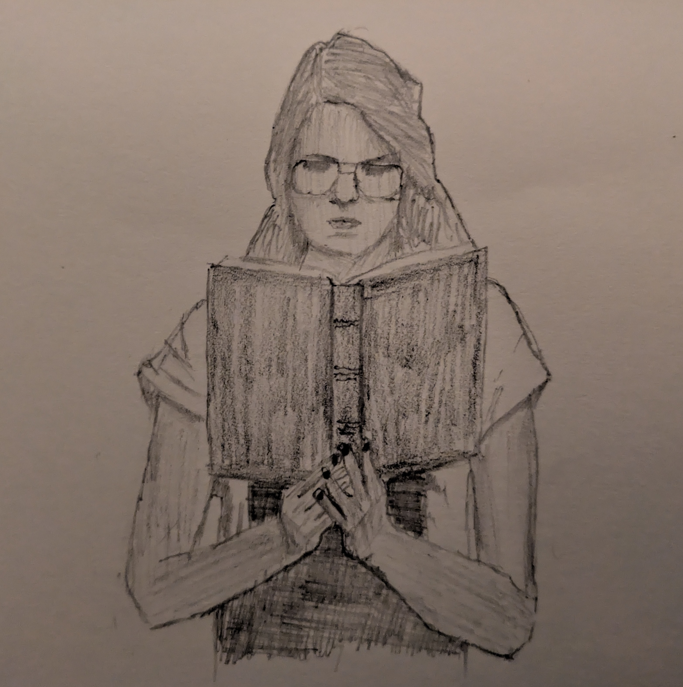

Nefarious Narratives on the Net

'Tis the season for horror lit
Once again, Spooky Season is upon us. This is my favourite time of year, the temperatures are low enough for me to wear lots of heavy clothes and the sky is much less bright which means I don’t need sunglasses. And also, scary stories. Whether film, audio, or text, I’m a horror freak. I’m currently re-listening to The Magnus Archives and rewatching Brand New Cherry Flavor on Netflix. I am, as ever, juggling a couple of horror novels as well. However, none of those are my favourite transmission vector for fear.
I really love short stories. I write some myself. For whatever reason, the web works incredibly well as a medium for this sort of fiction. Creepypasta and the like are the obvious thing here, but there’s a wealth of more conventional horror, weird, and speculative fiction online and freely available. Given that we’re in spooky season, I feel that there’s no better time to kick back and read some scary/strange shorts.
Here’s some links to keep you busy.
“The Power Company Detective” by Joe Koch
Published by Seize The Press
Koch’s work is weird, surreal, and gorgeous. The prose quality in his book The Wingspan of Severed Hands immediately won my heart, even if I found myself unsure of what was actually going on for most of the book. This story, published by anticapitalist horror small press Seize The Press, is poetic and strange in the extreme. There’s a dreamlike quality to it that really gets me going.“I’m Entering My Apocalyptic Era” by Joelle Killian
Published by Die Laughing Magazine
I’m not super familiar with Killian’s work, but I found this story to be a fun little occult/apocalyptic romp that fits perfectly into spooky season. Die Laughing Magazine is a new indie outfit focused on horror-comedy. Due in part to their newness, I don’t know them super well either, but this story was a fun first impression and I imagine I’ll pick up an issue at some point soon.“Visit East Marion!” by Ryan Marie Ketterer
Self-published
This one was super fun for me. There’s something about a writer just throwing their stuff up on a website that tickles me in exactly the right way. Aside from its distribution method, this story builds a vague unacanniness deftly throughout. It’s good without being ostentatious.“Accession” by Peter Ong Cook
Published by Cosmic Horror Monthly
Peter Ong Cook is another book club friend of mine. He’s a cool guy. This story is short and strange. In it, Cook makes use of folk tales from his Filipino heritage. I like folkoric monsters/tales as much as I enjoy weird avant garde stuff, and I’m especially fond of folkoric stuff that’s unfamiliar to me. This is one of a few different Philippines-inspired stories I’ve read that makes me want to learn Tagalog. For whatever reason, that nation and culture has some of the coolest monsters I’ve ever heard of.“Cire Perdue” by Ariel Marken Jack
Published by Gamut Magazine
This story is capital-W Weird. It’s beautifully written and plays with some really interesting ideas. I’m not particularly familiar with this writer but I’ll be keeping an eye out for more of their work, given how well-crafted this short is. The publication it’s in, Gamut, has had some really great writers nestled amidst its pages. I believe it’s out of print now, but there’s a lot in the archive for lovers of more literary horror and weird fiction.“Have Cake Will Eat” by Gregory Lawrence
Published by God’s Cruel Joke Literary Magazine
Lawrence’s tale here is a great little spooky season story. There’s something about it that makes it feel like it’d be at home in some sort of horror anthology TV show or movie. God’s Cruel Joke is another new-to-me literary magazine, though I’m very fond of their mission statement of publishing “art that explores the uncanny intersection of the profound and the profane.”“Westward I Reach” by Jennifer Jeanne McArdle
Published by Baubles from Bones
A beautiful story set in the times of the Irish potato famine. This publication is more focused on sci-fi and fantasy, and this story arguably fits into the latter category, but I feel its historical context, themes, and ideas fit well enough within the vibe I’m going for to include it here.“I Will Be Seen” by Theodore Hill
Published by Cold Signal
Theodore’s a delightful chap and writes brilliantly. This one’s one the squickier side, so if you’re not into body horror and the like you may want to skip it. But if you’re fine with that, then this story is short and punchy and very fun.“Problem Is” by Christopher O’Halloran
Published by Uncharted Magazine
I’ve mentioned Chris’ long-form writing on this blog before. This story is very different from that novel, though no less well-wrought. It’s got strong voice and masterful pacing. I’d expect no less from Uncharted, of course. They’re among the stronger publications, no doubt.“Welcome to Rebirth Grove” by K.A. Roy
Published by Malarkey Books
As a person that has moved more than I’d have liked, this little story really does it for me. I’m not super familiar with the American concept of HOAs, but I’ve lived in what I believe to be a similar sort of environment to those neighbourhoods for a couple of years and this story brings back those anxieties in the best way. Solid work.“Someone to Feed You” by Abigail Kemske
Published by Apex
Apex publishes good stuff. This story is no exception. It’s emotive, haunting, and a little gross. Stories in second person can be hard to pull off, but this works beautifully.“Worryeater” by K. Thompson
Published by Horrific Scribblings
This is another one that’s got a bit of an old-school horror anthology sort of feel. Very Halloween-friendly. It’s a fun idea and has great imagery.“You Are a Rock God” by Joelle Killian
Published by Mythaxis Magazine
Killian’s second story on this list. It’s quite different from the first, though still has performance as a theme. As a former goth kid who moonlighted as a metalhead and messed around with dubious substances in my youth, Killian’s drug-infused tale is relatable in a lot of ways. Glad to say I’ve never had trips go that off-course.“Leaden within the Lines” by Jennifer L. Collins
Published by Cosmic Horror Monthly
When someone gives me a massive vat full of pennies to make a straight-to-streaming horror anthology for Shudder, this will be the third story I adapt. I’ve had enough teacher friends to know that this story is far less of an exaggeration than one would hope.“Old Tom” by Antony Frost
Self-published
This is blatant self promotion, sorry. My second-to-most-recent short at time of writing. I’m rather fond of it and I’d love for more people to read it.
And there we have it. Fifteen short stories, all of which make suitable reading for spooky season. I’ve checked and all the sites work well enough on both a laptop and phone, so no excuses for not getting a little reading in.
I’ve prioritised independent publishers with their own websites for this list, steering clear of big platform sites like Reddit or Wattpad. But have no doubt, there’s plenty of good reading on those places too. Consider checking out r/NoSleep on Reddit if you haven’t before. There’s also the Lemmy equivalent for those trying to stay away from big platforms as much as possible but still wanting something that feels similar.
Alright, enough from me.
Toodles,
–Antony F.